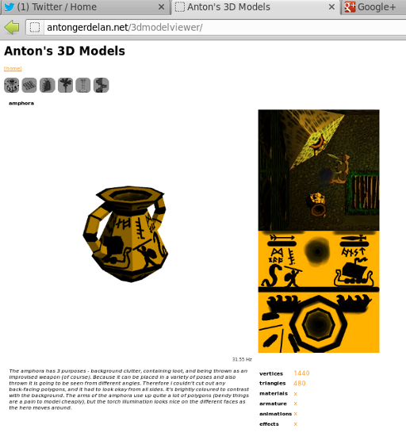

WebGL Quick Introduction
Dr Anton Gerdelan gerdela@scss.tcd.ie
About Me
- Working on Knoholem smart buildings with Dave and Kris
- Lectured in Karlskrona, Sweden. 3d, games, visualisation
- Did most of PhD with GV2. Vehicle simulation, AI, graphics.
|

|
https://antongerdelan.net/3dmodelviewer/
HTML5 Canvas: "Where" to Draw

|
-
regular HTML page
-
can use HTML+jQuery user interface
-
can give dimensions
|
Start GL with JavaScript
Include some JS at end of web page
<script src="webgl-utils.js"></script> // Google's helper file
<script src="main.js"></script> // our JS file
Start GL Context and Hook Up to Canvas
// get canvas using DOM
var canvas = document.getElementById ("mycanvas");
// hook up WebGL to the canvas
gl = WebGLUtils.setupWebGL (canvas);
// make background red when cleared
gl.clearColor (0.5, 0.2, 0.0, 1.0);
Vertex Buffers: "What" to Draw

// create empty vertex buffer object in GL
var vbo_index = gl.createBuffer ();
// enable the VBO in GL state machine
gl.bindBuffer (gl.ARRAY_BUFFER, vbo_index);
// copy points into currently enabled buffer
gl.bufferData (gl.ARRAY_BUFFER, new Float32Array (points), gl.STATIC_DRAW);
Shader Programmes: "How" to Draw
- Determine a style of rendering
- Can have several programmes and switch between them
- Compile into a single GPU programme from 2 parts;
- vertex shader - position each vertex, animate
- fragment shader - colour each pixel-sized surface area, transparency
Vertex Shader
attribute vec3 vp;
void main () {
gl_Position = vec4 (vp, 1.0);
}
Fragment Shader
attribute vec3 vp;
precision mediump float;
void main () {
gl_FragColor = vec4 (0.0, 0.0, 1.0, 1.0);
}
Render
// draw with shaders and vertex buffers
function render () {
// wipe canvas to background colour
gl.clear (gl.COLOR_BUFFER_BIT);
// "use" shader for drawing all subsequent geometry
gl.useProgram (shader_programme_index);
// enable the first attribute in the vertex shader
gl.enableVertexAttribArray (0);
// set our vertex buffer as the one to be drawn
gl.bindBuffer (gl.ARRAY_BUFFER, vbo_index);
// map the buffer to shader attribute 0 (as enabled above)
gl.vertexAttribPointer (0, 3, gl.FLOAT, false, 0, 0);
// draw
var number_of_points = 3;
gl.drawArrays (gl.TRIANGLES, 0, number_of_points);
}
Result:
index.html
Moving Things
|
|
JavaScript
- get handle to "M" variable in shader gl.getUniformLocation()
- "use" (enable) the shader programme gl.useProgram()
- update value of variable in shader gl.uniformMatrix4fv()
- Result: index.html
|
Vertex Shader Again
attribute vec3 vp;
uniform mat4 M;
void main () {
gl_Position = M * vec4 (vp, 1.0);
}
GPU Parallelism
Summary
Advantages
- 3d for the web that uses parallelised GPU processing (super fast)
- Web distribution of visualisation
- Opera, FF, Chrome, Android, Safari
- Much easier to learn than raw OpenGL
- No compilation
Limitations
- No IE, iOS yet
- Code is visible
- No geometry, tessellation shaders
- JavaScript's "silent errors", no profiling
These slides/code
https://antongerdelan.net/teaching/webgl_intro/
Going Further
- Bigger canvas area
- 2 triangles
- 2 shaders
- Loading a mesh from a file with AJAX and JSON https://github.com/capnramses/.obj-to-.json-converter
- Virtual Camera - view and projection matrices
- Using the Image.src object to load a texture from an image
Quiz
- Describe the relationship between HTML5, DOM, and JavaScript
- Does WebGL run on the client or the server? Why is this important?
- What parts of a WebGL programme execute on, or are interpreted on:
- the server
- the client's web browser (2 things)
- the client's graphics hardware/GPU
- Maybe something about what AJAX and JSON do, or an example of how we might use it